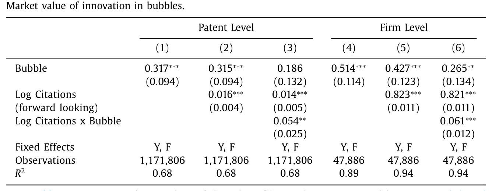
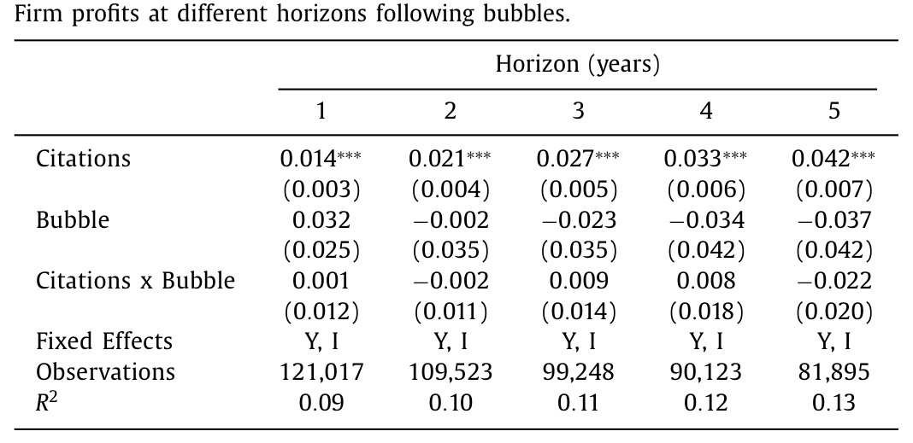
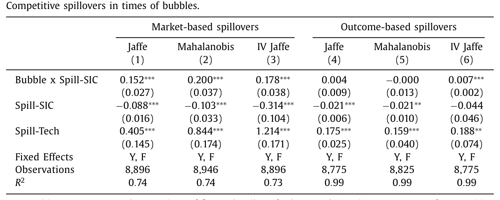
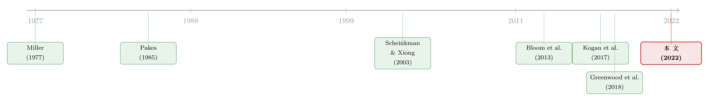

泡沫里，市场给创新贴错了两次价签
本文读的是 Haddad, Ho & Loualiche (2022, JFE)：当一个行业陷入泡沫，股价对「创新」的定价会在两个相反的方向上同时出错——创新者自己的股价比基本面应有的水平高估约 40%，而它的竞争对手明明利润受损、股价却纹丝不动。一正一负这两件事，几乎否决了所有现成的泡沫理论；作者用一个「投资者对哪家公司会赢意见不合」的模型，把它们一次性讲通了。
1 一把被广泛使用的「尺子」
先说一件这十年金融与宏观研究都默认的事：股价是一把测量「创新值多少钱」的好尺子。
逻辑很干净。一项创新到底会给经济带来多大冲击？你很难直接观测——专利的真实价值要到很多年以后、等它转化成销售和利润才看得清。于是 Kogan, Papanikolaou, Seru & Stoffman (2017)（下称 KPSS）提出了一个聪明的捷径：盯着一家公司专利获批后三天的股价异动，市场会替你把这项创新对创造者的现值「报」出来。Bloom, Schankerman & Van Reenen (2013)（下称 BSV）则把这把尺子伸向了竞争对手——一家公司创新，会从邻居嘴里抢走生意，邻居的市值和真实产出都会下滑，这叫竞争性溢出 (competitive spillover)。两篇论文一起，把「资产价格 = 创新的经济价值」这件事做成了一套跨行业、跨时间、可比的实时测度。
这套做法太好用，以至于很少有人追问：这把尺子在泡沫里还准吗？
这正是本文的张力所在。因为创新的繁荣，偏偏极爱和金融市场的狂热结伴而行——铁路、电力、互联网，每一波技术浪潮的高点都站着一群上头的投机者。如果尺子恰恰在你最想用它的那些时刻（创新最汹涌的时刻）失灵，那以它为基础的所有结论就都要打个问号。
注意作者的措辞很谨慎：已有文献只证明了股价平均而言反映创新价值。本文要做的不是推翻这个「平均」，而是指出它在泡沫这一特定状态下被系统性地扭曲了——而这恰恰是创新最密集、我们最依赖这把尺子的时候。
2 两次「贴错的价签」
那么，泡沫里到底发生了什么？作者把它拆成两个干脆利落的事实。
第一次贴错，发生在创新者自己身上。 同样一项专利、同样的引用数（也就是同样的最终质量），在泡沫行业里，它把创造者股价推高的幅度，比它日后真正兑现的销售、利润所能解释的，要高出约 40%。市场对「自己人」的创新，过度反应 (overreaction) 了。
第二次贴错，发生在它的竞争对手身上，而且方向相反。 按 BSV 的逻辑，一家公司创新，会损害对手的真实利润——这一点在泡沫里照样成立，利润该掉还是掉。可吊诡的是，对手的股价却几乎不动。市场对「别人家」的创新威胁，反应不足 (underreaction) 了。
把这两件事并排放在一起，你会发现它们是一对天生互相矛盾的孪生子：对同一项创新，市场在创造者那头反应过度，却在被波及者这头反应不足。 这个组合，正是全文最值钱的「指纹」——后面我们会看到，它几乎能把所有泡沫理论一一筛掉，只留下作者想讲的那一种。
接着，一个自然的问题是：你凭什么说这是「贴错了价」，而不是市场看到了我们没看到的好消息？这就要靠识别。
3 怎么把「泡沫」框出来
要谈泡沫期的定价，第一步得先有一个不靠事后诸葛、可以提前框定的「泡沫」定义。作者直接借用 Greenwood, Shleifer & You (2018) 的经验定义，把美股按 Fama & French (1997) 的 49 个行业切开，规定一个「行业–月」同时满足三条才算泡沫：
- 该行业市值加权组合过去两年回报 ≥
100%； - 同一两年里，它跑赢大盘 ≥
100%； - 过去五年回报 >
50%。
再把月度聚合到年度（只要一年里有一个月在泡沫里，这一「行业–年」就算泡沫）。这套筛子在 1962–2017 年间挑出了 74 个「行业–年」。
这个定义当然不完美——泡沫的存在本身就有争议，它既会漏掉一些真泡沫，也会把一些真实的生产力繁荣误判成泡沫。但作者点出一个关键方向：这种误判会让真实繁荣（基本面确实在改善）混进样本，从而偏向于让结果更难显示出「断裂」。也就是说，测量误差是在跟作者作对，他们依然找到了断裂，结论因此更可信。
创新的度量沿用 KPSS：横跨 1926–2010、上百万件专利的股市–专利合并数据，用专利获批后三天的股价反应度量私人价值，用前瞻引用数 (forward-looking citations) 度量质量。溢出则沿用 BSV，用 Jaffe、Mahalanobis 和 Jaffe 的工具变量三种「距离」，把「同技术类、互相学习」的知识溢出和「同产品市场、互相抢生意」的竞争溢出分开。
4 把数字摆上桌
第一个事实，对应回归式 (1)：
$$\log \xi_{j,t} = \beta\, B_{j,t} + \gamma\, Z_{j,t} + \varepsilon_{j,t}$$
其中 \(\xi_{j,t}\) 是专利 \(j\) 的市场价值，\(B_{j,t}\) 是「发该专利的公司当年所在行业是否处于泡沫」的虚拟变量，控制项 \(Z_{j,t}\) 含引用数对数、公司与年份固定效应。公司固定效应很要紧——它保证结论不是「那些会经历泡沫的公司本来就是某一类公司」造成的。
结果如表 1：泡沫里，创新的私人价值在专利层面高出 30%（第 1、2 列，\(\beta=0.317\)、\(0.315\)，标准误 0.094），在公司层面高出 40%–50%（第 4、5 列，\(0.514\)、\(0.427\)）。更妙的是第 3、6 列：泡沫里引用数对估值的边际作用反而更强（Log Citations × Bubble 为 0.054、0.061，均显著）。这一笔直接堵死了一个常见的反驳——「泡沫里只是整体水位高，跟具体某项专利无关」。不，市场恰恰在更卖力地对专利质量定价，只是定得过了头。

Table 1
那它定过头了多少？要回答，就得看真实结果有没有跟上。作者把式 (1) 左边换成未来 1 到 5 年的利润（销售、生产率结果类似），得到表 2。结论一句话：没跟上。 引用数本身确实预示更高的未来利润（1 年 0.014、5 年 0.042，都高度显著），但「引用 × 泡沫」的交互项在各期都紧贴着零、且不显著（0.001、-0.002、0.009、0.008、-0.022），泡沫的水平效应也一个都不显著。换句话说，泡沫里那 40% 的市值溢价，对应着几乎为零的真实改善。第一次断裂，坐实了。

Table 2
然后，真正关键的一步，是第二个事实——竞争溢出。作者在 BSV 的框架上加了一个泡沫交互项，得到本文识别的核心方程：
这里 \(X_{i,t}\) 既可以取公司市值（Tobin's q），也可以取公司真实产出（行业价格指数平减后的销售）。同一条方程跑两遍，就把「市场怎么看溢出」和「溢出真实有多大」对照了出来。
表 3 是全文的题眼。看市值这一侧（第 1–3 列）：非泡沫期 \(spill^{sic}\) 系数显著为负（-0.088、-0.103、-0.314），印证 BSV——对手创新会压低你的市值；但泡沫交互项显著为正（0.152、0.200、0.178），几乎把负效应抵消掉，泡沫里竞争溢出对市值的总效应变成了零甚至转正。再看真实销售这一侧（第 4–6 列）：\(spill^{sic}\) 依旧为负且显著（-0.021、-0.021），而泡沫交互项又小又不显著（0.004、-0.000）。

Table 3
一句话总结这张表：泡沫并没有改变对手创新对你真实生意的伤害，它只是让市场对这种伤害视而不见。 第二次断裂，也坐实了。（关于把「同行的创新如何传到你身上」做干净识别，可参见《天线效应：硅谷为什么离不开波士顿？》。）
5 为什么现成的泡沫理论都不够
到这里，故事的张力被拉到了最满：我们手上有一对方向相反的反常——直接效应过度反应、溢出效应反应不足。于是问题变成：什么样的泡沫，才能同时长出这两副面孔？
作者像做排除法一样，把候选理论一个个划掉：
- 如果泡沫只是给价格加了一段随机噪声（理性泡沙 rational bubble，如 Tirole, 1985，或没锚定的信念）——那它既不该让创新者系统性地反应过度，也不该让对手系统性地反应不足。两头都对不上。
- 如果是投资者对整个创新板块过度乐观——那估值确实会对创新反应更猛（对得上直接效应的过度反应），可问题是，板块里的对手也会被一起捧上天，溢出效应不会被抹平。对不上。
- 如果是对行业总体前景的分歧——道理一样，乐观者的声音主导了价格，对手也会跟着涨。还是对不上。
发现规律了吗？所有「对总量乐观」的故事，都会让创新者和对手被同一批乐观投资者定价，于是它们要么一起涨、要么一起被噪声搅动——绝不可能出现「这家过度反应、那家反应不足」的非对称。
于是反转出现了：要造出这种非对称，分歧就不能发生在「总量」上，而必须发生在「哪家公司会赢」上。
6 关键一步：对「谁会赢」意见不合
作者的模型设定在一个直觉极强的场景上。投资者们其实同意社交网络这个行业总共值多少钱——他们争的是：最后赢家是 Twitter 还是 Facebook？
这一个看似微小的改动，配上一个经典的老机制，就把两件反常一起生出来了。
那个老机制，是 Miller (1977)：当存在卖空约束、又存在意见分歧时，一只股票的价格不会反映所有人的平均看法，而是被最乐观的那群人钉住——因为悲观者只能选择不持有、退到场外，他们的怀疑进不了价格。在本文里，每家公司的股东，都是那群「最看好这家公司」的乐观者。
接着把这个机制嵌进「对谁会赢的分歧」，奇妙的事就发生了——
- 持有创新者 A 的，是一群坚信「A 会赢、会抢走 B 生意」的乐观者。当 A 拿出一项创新，在他们眼里这等于「A 要去吃掉 B 了」，于是他们把 A 的股价用力往上推——直接效应的过度反应，来自 A 的主人。
- 但持有竞争对手 B 的，是另一群人，他们坚信「B 才更强」。当 A 创新时，B 的主人根本不认为这是威胁——「那又怎样，我们 B 更好」。于是 B 的股价对这条本该是坏消息的溢出几乎不动——溢出效应的反应不足，来自 B 的主人。
同一项创新，定价它的两群人不是同一群人。这就是全文最优雅的一句话：A 的价格由「相信 A 会赢」的人定，B 的价格由「相信 B 会赢」的人定，而这两群人对「A 的创新意味着什么」给出了截然相反的解读。非对称，就这样从一个对称的设定里自然长了出来。
这也是本文相对分歧文献的真正新意所在。Scheinkman & Xiong (2003)、Harrison & Kreps (1978) 这一脉，分歧大多发生在单一资产或总量层面；本文把分歧下放到了公司层面（对「哪家公司胜出」的分歧），于是模型能讲清「公司之间的相互作用」如何被市场扭曲。投资者也因此在持仓上专业化——只押自己看好的那家——这一点作者说在数据里也能看到。（关于把「不同投资者对同一资产的需求分歧」直接写进定价，可参见《你卖出时，谁还在场？——把「需求分歧」写进资产定价》。）
值得一提的是，作者并不是用模型去硬凑数据，而是先有一对互相矛盾的事实、再去找唯一能容下它们的机制。这种「事实倒逼理论」的写法，比「先有模型再找显著性」要扎实得多。（如何不靠问卷、直接从价格里把投资者的信念读出来，可参见《想知道投资者信什么？去问价格，别问问卷》。）
7 一个被扭曲的「外部性」，与政策的麻烦
模型讲通了，最后一步是它有什么用。作者落到一个规划者 (planner) 的问题上：泡沫期该如何制定创新政策？
通常我们以为，泡沫期政策的任务就是「逆风而行」——价格被吹高了，会刺激过度创新，那就把它压一压。但本文指出这只对了一半。真正棘手的是：市场对「外部性」的评估本身被扭曲了。 一项创新对竞争对手的负外部性是真实存在的（利润照掉），可市场（也就是对手的乐观股东）压根不认这笔账。于是规划者不能简单地拿市场价格当外部性的度量——因为「承受外部性的那群人的信念」和「制造外部性的那群人的信念」根本不是一回事。这恰恰是本文新机制的一个直接表达。
换句话说，泡沫扭曲的不只是「创新的总量」，还有「创新者与被波及者之间那笔账该怎么算」。福利分析也因此不能偷懒地选定某一方的信念——作者沿用 Brunnermeier, Simsek & Xiong (2014) 的办法，在所有信念的凸组合上都要求配置有效，绕开了「该信谁」这个无解的选择。
8 文献脉络
把这条线索捋一遍，故事其实横跨了两条原本各走各路的文献。
一条是「用资产价格度量创新价值」的脉络：从 Pakes (1985) 提出「专利、研发与股市回报」的想法起步，经由一系列实现，到 KPSS (2017) 用专利获批的股价反应度量创新对创造者的价值、BSV (2013) 用市值度量创新对竞争对手的溢出，达到成熟。这一脉的底层信念是：价格反映价值。
另一条是「分歧与投机性泡沫」的脉络：Miller (1977) 奠定了「卖空约束 + 分歧 ⇒ 价格被乐观者主导」的基石，Harrison & Kreps (1978)、Scheinkman & Xiong (2003) 把它推进到动态与过度自信，再到 Barberis, Greenwood, Jin & Shleifer (2018) 的外推泡沫。这一脉的底层信念是：价格会偏离价值。

本文站的位置，恰好是这两条脉络的交叉口：它借第二条脉络（分歧）去解释第一条脉络（价格度量）在泡沫里为何失灵，并把泡沫识别交给 Greenwood, Shleifer & You (2018)。更进一步，它把分歧从「总量」下放到「公司层面」，于是能讲出一个老文献讲不出的预测——公司之间相互作用的定价非对称。这正是它的原创贡献。
评论与延伸（Q&A + 研究方向）
(a) 几个可能的疑问
Q：泡沫里创新者股价高 40%，会不会只是因为泡沫行业本来就由不同类型公司组成？
不太可能。式 (1) 里放了公司固定效应，比较的是「同一家公司在泡沫期 vs 非泡沫期发的专利」，而非「泡沫公司 vs 非泡沫公司」。再加上引用数控制和年份固定效应，剩下的就是同一公司、同等质量专利在两种市场状态下的定价差。
Q：会不会泡沫期波动率更高，把估值反应放大了，跟分歧无关？
作者在网络附录 IA.3 里加了公司层和行业层的波动率控制，结论不变。这一点他们专门做了稳健性，说明
40%不是波动率假象。
Q：「市场对真实结果反应不足」这个结论，会不会只是利润这个指标太吵、估不出效应？
表 2 的反例做得很干净：引用数对未来利润的主效应本身是显著为正且随期限递增的（1 年
0.014到 5 年0.042），说明这个回归是有功率的；偏偏「引用 × 泡沫」交互项紧贴零。是「泡沫没改变基本面」，不是「估不动」。
Q：这和「整个板块被高估」到底有什么不同？两者不都说泡沫里估值偏高吗？
区别全在溢出这一头。板块高估会把创新者和对手一起抬上去，于是负溢出会被抹成正；本文的「公司层分歧」则让对手由「相信对手会赢」的人定价，他们不认创新者的威胁，于是溢出被忽略而非反转成正向追捧。表 3 里市值侧溢出归零、销售侧溢出照旧，正是后者的指纹。
Q：把泡沫定义换一个，结论还稳吗？
作者直接采用 Greenwood, Shleifer & You (2018) 这一被广泛接受的事前定义，且强调其测量误差是偏向于削弱结论的（真实繁荣混入会让断裂更难显现）。这意味着真实效应只会比估出来的更强，而非更弱。
Q：卖空约束在美股上市公司里真有那么强，强到能撑起这套机制吗？
这是机制层面最值得追问的地方。模型继承 Miller (1977)，需要悲观者无法（或不愿）做空才能让乐观者主导价格。对大盘蓝筹这个假设偏弱，但本文聚焦的恰是泡沫行业里年轻、信息稀缺的小公司——那里做空更贵、分歧更大，假设也更站得住。
(b) 几个可能的研究问题与提案
1. 把「双向断裂」搬到公司债与信用利差上
【经济故事】股票被乐观者主导而高估，那同一家泡沫期创新公司的信用利差呢？股东（乐观者）和债权人（更在乎下行）对同一项创新的解读可能完全相反——股价过度反应的同时，利差未必跟着收窄，甚至可能因为投资过度而走阔。这能给「股债定价不一致」添一个由分歧驱动的新样本。 【可行性】中。需要把 KPSS 的专利–公司数据接到 TRACE 公司债成交与利差上，识别可沿用本文的泡沫交互设定。难点在泡沫期发债的公司样本偏薄，且要分离信用风险与流动性。
2. 谁在持有泡沫期创新者？——「持仓专业化」的直接检验
【经济故事】模型的命门是「A 的股东和 B 的股东是两群人」。本文说数据里能看到专业化，但可以做得更狠：用 13F 机构持仓，检验泡沫期同一行业内互为竞争对手的两家公司，其机构股东重叠度是否显著下降。重叠度越低，越支持「公司层分歧」而非「板块乐观」。 【可行性】高。13F + Fama-French 行业 + Greenwood 泡沫定义都是现成的，识别就是一个 DiD-on-overlap。这是最容易、也最能直接证伪机制的一步。
3. 外资持有人会放大还是熨平这种非对称？
【经济故事】外国投资者通常对「哪家本土公司会赢」信息更少、更容易抱团押注明星标的。如果泡沫期外资集中涌入创新者而回避其对手，他们可能正是把直接效应推过头、把溢出按住的边际买家。 【可行性】中。需要 TIC 或基金层的国别持仓数据接到公司层创新度量上，识别可用外资准入冲击（如纳入 MSCI）作为外生变化。诚实地说，把「外资」与「泡沫」两重处理叠在一起，样本会很紧。
4. 泡沫破灭后，价签是怎么「改回来」的？
【经济故事】本文讲的是泡沫当期的定价扭曲。一个自然的续集是：泡沫破灭后，创新者那
40%溢价如何回吐、对手被忽略的溢出又如何被重新计入？回补的速度与顺序，能反过来检验「乐观者退场」这一机制。 【可行性】高。事件窗口围绕各行业泡沫的事后崩盘点，做创新者与对手的长期累计异常收益对照即可，数据全在手边。
参考文献
- Barberis, N., Greenwood, R., Jin, L., Shleifer, A. (2018). Extrapolation and bubbles. Journal of Financial Economics 129(2), 203–227.
- Bloom, N., Schankerman, M., Van Reenen, J. (2013). Identifying technology spillovers and product market rivalry. Econometrica 81(4), 1347–1393.
- Brunnermeier, M.K., Simsek, A., Xiong, W. (2014). A welfare criterion for models with distorted beliefs. Quarterly Journal of Economics 129(4), 1753–1797.
- Haddad, V., Ho, P., Loualiche, E. (2022). Bubbles and the value of innovation. Journal of Financial Economics 145(1), 69–84.
- Kogan, L., Papanikolaou, D., Seru, A., Stoffman, N. (2017). Technological innovation, resource allocation, and growth. Quarterly Journal of Economics 132(2), 665–712.
- Miller, E.M. (1977). Risk, uncertainty, and divergence of opinion. Journal of Finance 32(4), 1151–1168.
- Pakes, A. (1985). On patents, R&D, and the stock market rate of return. Journal of Political Economy 93(2), 390–409.
- Scheinkman, J.A., Xiong, W. (2003). Overconfidence and speculative bubbles. Journal of Political Economy 111(6), 1183–1220.
- Tirole, J. (1985). Asset bubbles and overlapping generations. Econometrica 53(6), 1499–1528.